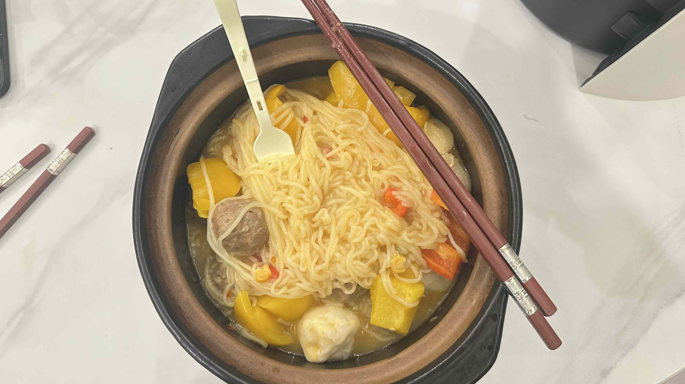

Kochen mit einer Heißluftfritteuse | Original, von KI übersetzt
Der Luftfritteur ist in letzter Zeit zu meinem liebsten Küchengerät geworden. Ich habe den Midea Air Fryer KZE5004 für etwa 126 CNY gekauft.
Ich habe die folgenden Gerichte zubereitet, und die Erfahrung war wirklich angenehm.
Das letzte hier gezeigte Gericht wurde nicht im Luftfritteur zubereitet – es waren einfach Nudeln aus einem Topf. Da es einer meiner letzten Kochversuche war, habe ich es hier ebenfalls aufgenommen.
Wenn man ein Küchengerät häufig benutzt, nachdem man es gekauft hat, kann man sagen, dass man es wirklich mag.
Der Luftfritteur hat meinen elektrischen Backofen ersetzt. Eigentlich würde ich gerne beide benutzen, aber meine Frau erlaubt es nicht – sie beschwert sich, dass er zu viel Platz wegnimmt und unser Esszimmer und die Küche verstopft, die bereits mit vielen Geräten und Geschirr gefüllt sind.
Das ist vernünftig, da meine Frau mich an Wochenenden besucht und ich nicht möchte, dass der Platz beengt wirkt. Wenn ich dauerhaft alleine leben würde, würde ich den elektrischen Backofen wieder ins Esszimmer stellen.
Es gibt einige Vorteile, beide Geräte zu behalten. Erstens kann man den Backofen und den Luftfritteur gleichzeitig nutzen, besonders wenn man mehrere Gerichte kocht. Zweitens kann man die subtilen geschmacklichen Unterschiede vergleichen, wenn man dieselben Zutaten in beiden zubereitet. Drittens ist es eine Verschwendung, ein gutes Produkt ungenutzt zu lassen.
Immer nur ein Gerät zu benutzen, kann langweilig werden, also habe ich traditionelles Kochen auf dem Herd ausprobiert und Nudeln in einem Topf gemacht. Ich erinnere mich, dass ich 2020 und 2021 ähnliche Gerichte im Haus meiner Eltern gekocht und manchmal kleine Videos darüber gemacht habe.
Damals schien Kochen mühelos. Aber jetzt, da ich nicht so oft koche, fühlt sich sogar die Benutzung des Luftfritteurs manchmal wie eine Mühe an, und ich bin versucht, Essen zu bestellen, wenn ich beschäftigt bin. Daher habe ich in letzter Zeit kaum eine Pfanne oder einen Topf benutzt – deshalb bin ich froh, dass ich es heute getan habe.
Ursprünglich habe ich Packungen mit Rindfleischbällchen gekauft, um sie im Luftfritteur zuzubereiten, aber jetzt möchte ich sie auch in einem Topf probieren.
Die Nudeln waren köstlich. Ich habe viel Wasser verwendet, um die Zutaten zu kochen, das überschüssige Wasser abgeschöpft und dann das Gewürzpaket in den Topf gegeben. Das Endergebnis war großartig!

Quelle: Eigenaufnahme

Quelle: Eigenaufnahme

Quelle: Eigenaufnahme

Quelle: Eigenaufnahme

Quelle: Eigenaufnahme

Quelle: Eigenaufnahme

Quelle: Eigenaufnahme
Kochen
2024.12.29
-
Für sich selbst zu kochen ist einfach. Verwende Öl zum Braten, weil es einen höheren Siedepunkt als Wasser hat, was die Speisen effektiver erhitzt.
-
Es ist einfach, ein Gericht mit Fleisch, Gemüse, Chili, Knoblauch und Ingwer zuzubereiten.
-
Ein Gemüsehacker ist ein sehr nützliches Werkzeug. Er kann Gemüse in Würfel, Scheiben oder Streifen schneiden und für Aufgaben wie das Schneiden von Kartoffeln oder das Erstellen kleiner Granulate aus Paprika verwendet werden.
-
Suppe zu kochen ist einfach mit einem elektrischen Kocher. Füge die Zutaten hinzu, würze mit Salz, stelle den Timer ein und lass es kochen.
-
Suppe mit chinesischer Yamswurzel ist großartig, weil sie leicht in der Suppe kocht und die Suppe dick macht. Karotten, Daikon und Tomaten sind ebenfalls gute Zutaten für diese Suppe.
-
Ein Grillofen kann verwendet werden, um Eierkuchen, Lamm, Rind, Schwein, Hot Dogs, Pilze und mehr zuzubereiten. Für Fleisch stelle die Temperatur auf 200°C ein und koche es etwa 20 Minuten.
-
Für das Kochen im Freien benötigst du ein Feuer. Getrocknete Blätter können verwendet werden, um das Feuer zu entfachen. Finde einen Behälter, um das Essen zum Kochen zu halten, oder verwende sogar eine Fliese als provisorischen Topf.
-
Ein Reiskocher kann auch zum Erwärmen von Speisen verwendet werden, nicht nur für Reis. Beachte jedoch, dass Gemüse dazu neigt, Wasser freizusetzen, was den Reis zu nass machen kann. Füge nur eine kleine Menge Wasser hinzu, wenn du Gemüse im Reiskocher kochst.
-
Ein Kochroboter ist ein praktisches Werkzeug zur Zubereitung von Gerichten. Füge einfach die Zutaten hinzu und lass den Roboter das Rühren übernehmen.
-
Wir müssen verstehen, wie lange jede Zutat gebraten werden muss. Brokkoli braucht mehr Zeit, während Pilze und Fleisch weniger Zeit benötigen.
-
Wenn wir sie zusammen kochen, führen die unterschiedlichen Garzeiten dazu, dass einige Zutaten überkocht und andere unterkocht sind. Die Reihenfolge, in der wir die Zutaten in die Pfanne geben, ist wichtig.
-
Wir sollten das Waschen des Topfes zwischen den Gerichten minimieren und können einige Lebensmittel zusammen braten.
-
Wir können denselben Prozess oder dieselbe Funktion auf ähnliche Objekte oder Gegenstände mit denselben Eigenschaften anwenden. Dies gilt sowohl für das Kochen als auch für die Programmierung.
-
Zutaten, die in einem Grillofen erhitzt werden, können mit Maisstärke und heller Sojasauce bestrichen werden. Auch das Marinieren mit Fruchtsaft ist akzeptabel, wie Zitronen-, Orangen- oder Apfelsaft.
-
Wir schneiden Fleisch oder andere Zutaten in kleine Stücke, damit sie im Topf effektiver erhitzt werden können. Daher ist die Vorbereitung für die Suppenherstellung anders, bei der größere Stücke akzeptabel sind.
-
Das Wichtigste beim Kochen ist, das Essen vollständig zu garen, damit es sicher zu essen ist.
-
Die Verwendung eines Grillofens anstelle eines elektrischen Dämpfers bedeutet, dass keine Wasser zum Erhitzen der Speisen verwendet wird, was das Essen trocken macht.
-
Ein Mörser ist ein tolles Werkzeug, um Knoblauch zu zerkleinern.
-
Verwende nicht zu viel Salz, insbesondere wenn die Zutaten bereits mit Sojasauce bestrichen sind.
-
Fleisch muss normalerweise nicht noch einmal gewaschen werden. Menschen neigen dazu, Zutaten übermäßig zu waschen; es ist nicht nötig, sie gründlich mit Wasser zu reinigen. Wir müssen nur sicherstellen, dass die Zutaten frisch sind.
-
Backpapier ist besser als Alufolie, weil es nicht an der Kochfläche klebt.
-
Sei vorsichtig mit Zutaten, die viel Wasser enthalten, wie Paprika. Das Rühren mit Fleisch kann Wasser freisetzen, was die Bratemperatur senkt und den Kochprozess verlangsamt.
 Quelle: Eigenaufnahme
Quelle: Eigenaufnahme
 Quelle: Eigenaufnahme
Quelle: Eigenaufnahme